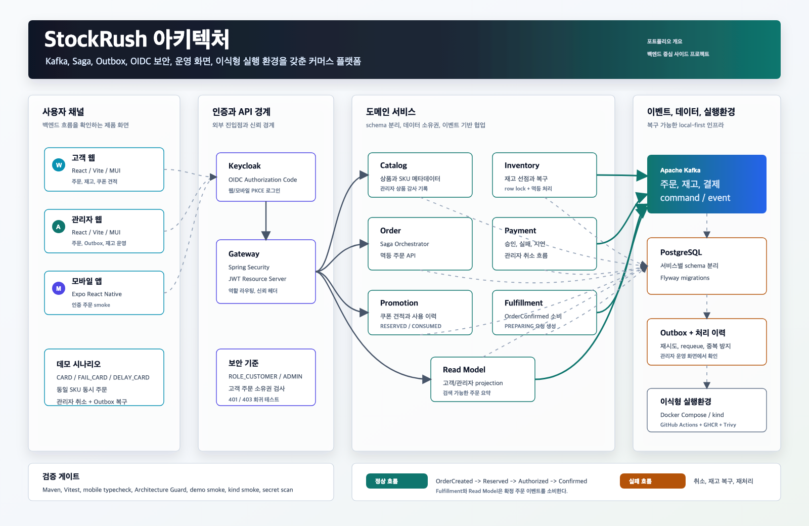
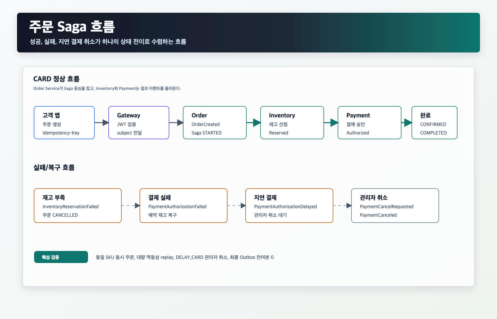
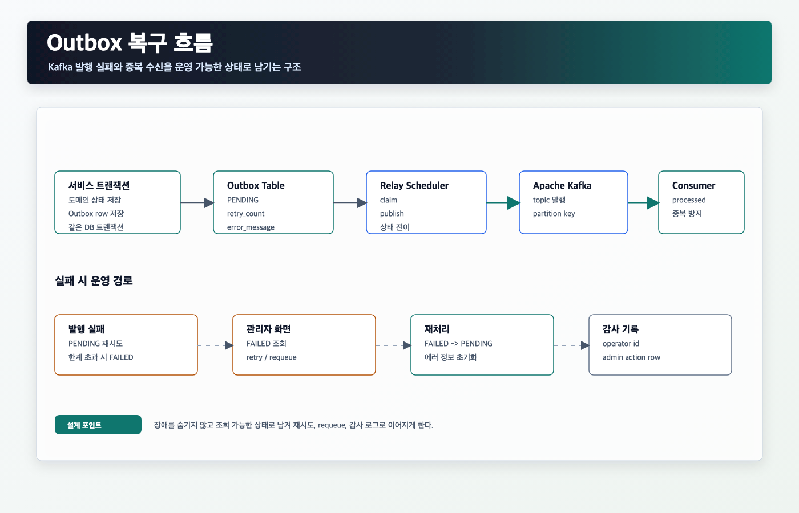
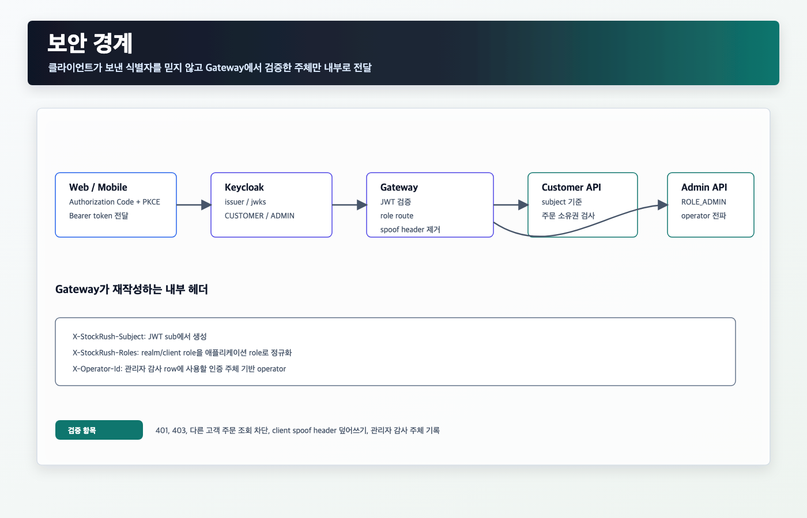
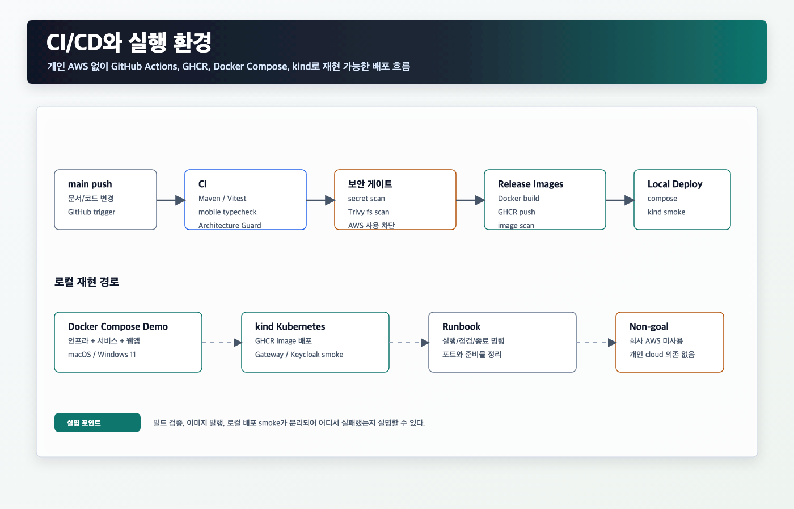

한정 판매 커머스에서 주문, 재고, 결제, 쿠폰, 출고, 조회 모델을 분리했을 때 생기는 상태 수렴과 운영 복구 문제를 Kafka, Saga, Outbox, OIDC 기반으로 다룬 프로젝트입니다.

앞으로 사이드 프로젝트를 추가할 수 있도록 프로젝트별 섹션 구조로 정리했습니다.
Kafka 기반 주문 Saga, Outbox 복구, OIDC 보안, Docker/kind 실행 환경을 묶은 백엔드 중심 커머스 프로젝트
아직 비워둔 슬롯입니다. 추후 다른 도메인이나 기술 축을 별도 프로젝트로 추가합니다.
운영, 데이터, AI, 모바일 등 StockRush와 다른 강점을 보여줄 프로젝트를 추가할 수 있습니다.
단순 CRUD보다 상태 수렴, 장애 복구, 운영 화면, 검증 자동화가 필요한 백엔드 흐름에 집중했습니다.
코드, 테스트, 실행 스크립트, 문서, 이미지 원본은 GitHub 저장소에서 확인하도록 분리했습니다.
면접이나 제출용으로 빠르게 훑는 요약본입니다. 구현 세부사항은 링크를 기준으로 확인합니다.
한정 판매 주문 흐름에서 서비스 분리 이후 생기는 실패와 복구를 설명 가능한 구조로 만들었습니다.
주문, 재고, 결제를 분리하면 하나의 DB 트랜잭션으로 모든 상태를 즉시 확정하기 어렵습니다. 실패와 지연도 사용자/운영자가 이해할 수 있는 상태로 남아야 합니다.
Order Service를 Saga 중심으로 두고, Inventory와 Payment는 Kafka command/event로 결과를 돌려줍니다. 발행 실패는 Outbox로 운영 가능한 상태에 남깁니다.
정상, 결제 실패, 지연 결제 취소, 동일 SKU 동시 주문, Kafka 일시 중단, Gateway 보안 시나리오를 로컬에서 재현 가능하게 만들었습니다.
전체 구조는 Gateway와 Kafka를 중심으로 읽고, 주문 Saga와 Outbox 복구를 별도 이미지로 설명합니다.


PDF에는 핵심만 남기고, 코드와 상세 증거는 GitHub 문서로 이동합니다.

